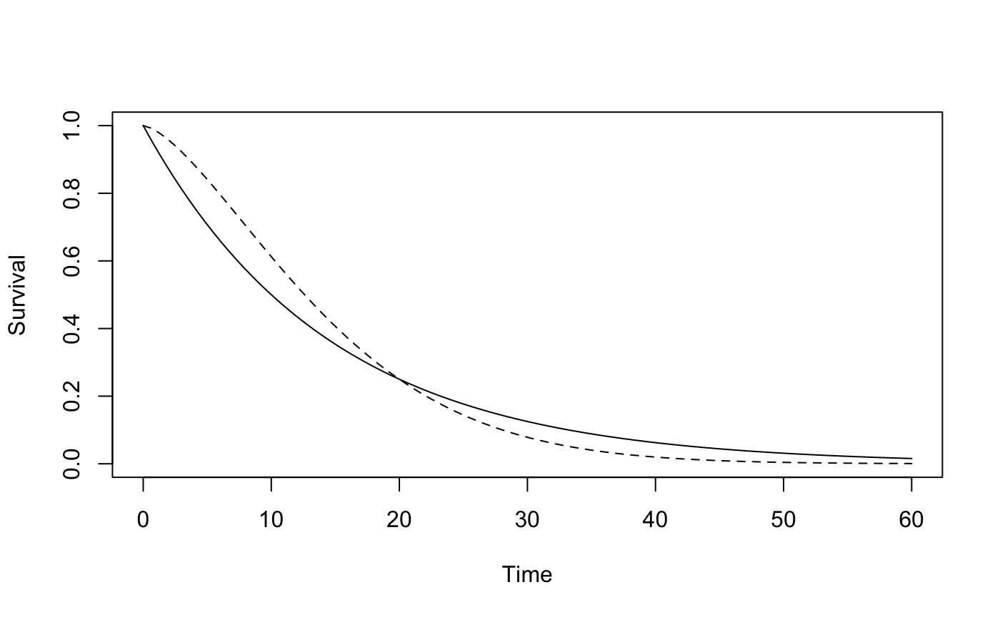
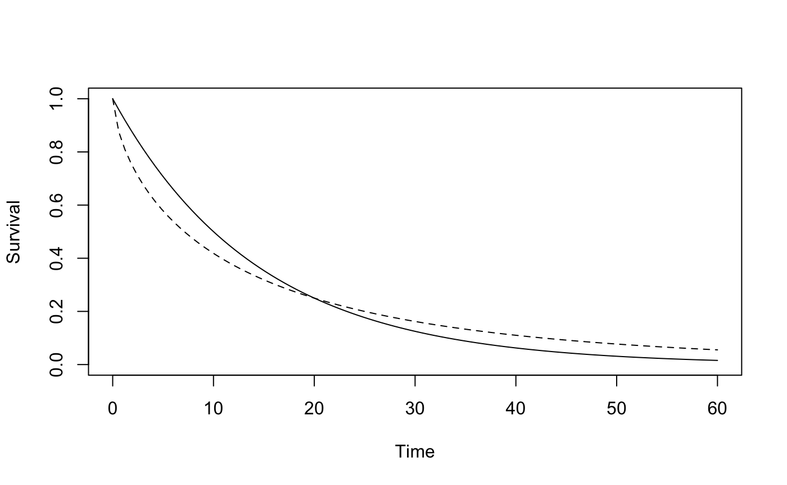

vignettes/RMSTdesign-package-validation.Rmd
RMSTdesign-package-validation.RmdThis vignette validates the internal functions of the RMSTdesign package by comparing the results to those obtained by plugging design parameters directly into simple formulas. This vignette also confirms that the asymptotic power and pKME returned by the RMSTpow function are close to their empirical conterparts across several scenarios. Along with the results in our paper1 (Tables 1 and 3 which show that the power of the RMST-based test and pKME calculated using RMSTpow match their empirical counterparts across 4 scenarios, various values of k1, k2, tau and n, and a table in Appendix I which shows that the empirical variance of the RMST estimator matches the variance calculated using the internal function evar from RMSTdesign), the vignette “Compare-to-SSRMST” (which shows that results from RMSTdesign match simulation results from the SSRMST package2 in 4 scenarios), and the vignette “GOG111-Trial”, which shows that RMSTpow returns almost the same sample size as the one calculated by Royston and Parmar3 (with the difference likely due to different approaches for calculating the restricted mean survival difference and its variance), these results validate that the calculations in the RMSTdesign package are correct and that the package can be used for trial design.
The internal functions implement equations 1, 3 and 4 from our paper4. We can show that in simple settings, these equations simplify to simple formulas in terms of the design parameters.Below, we have presented the simple formulas, and then shown that the results of the internal functions match the results obtained by plugging in the design parameters, for several combinations of the design parameters.
The evar function calculates the variance of the estimated difference in RMST according to equation 1 in our paper. We will confirm that it gives the correct result in a simple setting. In the setting of an exponential survival distribution and no censoring before time \(\tau\), the asymptotic variance of the estimated mean survival time is equal to
\[\frac{1}{n\lambda^2}(1-\exp(-\lambda\tau)\times\{\exp(-\lambda\tau)+2\lambda\tau\})\]
Below, the variance at the end of the trial (calculated with evar) is compared to the variance calculcated according to the formula above for several combinations of design parameters:
n<-200; lambda<-0.07; tau <-10
evar(survdef(haz = lambda), 0, tau, tau, tau, n)
#> [1] 0.05937103
(1/(n*lambda^2))*(1-exp(-lambda*tau)*(exp(-lambda*tau)+2*lambda*tau))
#> [1] 0.05937103
n<-200; lambda<-0.035; tau <-10
evar(survdef(haz = lambda), 0, tau, tau, tau, n)
#> [1] 0.04135932
(1/(n*lambda^2))*(1-exp(-lambda*tau)*(exp(-lambda*tau)+2*lambda*tau))
#> [1] 0.04135932
n<-200; lambda<-0.07; tau <-20
evar(survdef(haz = lambda), 0, tau, tau, tau, n)
#> [1] 0.2537943
(1/(n*lambda^2))*(1-exp(-lambda*tau)*(exp(-lambda*tau)+2*lambda*tau))
#> [1] 0.2537943
n<-400; lambda<-0.07; tau <-10
evar(survdef(haz = lambda), 0, tau, tau, tau, n)
#> [1] 0.02968552
(1/(n*lambda^2))*(1-exp(-lambda*tau)*(exp(-lambda*tau)+2*lambda*tau))
#> [1] 0.02968552The powfn function calculates the power of the one-sided test of the difference in RMST according to equation 3 in our paper. We will confirm that it gives the correct result in a simple setting. In the setting of exponential survival distributions in each group and no censoring before time \(\tau\), the sampling distribution of the test statistic Z is has a mean of \[\mu=\frac{\frac{1-p^r}{r}-(1-p)}{\frac{1}{\sqrt(n/2)}\sqrt(\frac{1}{r^2}(1-p^r\{p^r+2r(-\log(p))\})+1-p\{p+2(-\log(p))\})}\]
where \(r\) is the pazard ratio and \(p\) is the survival probability at time \(\tau\) in the control group.
Below, the power at the end of the trial (calculated with powfn) is compared to the power calculcated according to the formula above for several combinations of design parameters:
n<-200; lambda<-0.07; r<-0.5; tau <-10; alpha = 0.025
p<-survdef(haz = lambda)$S(tau)
mu_num<-(1-p^r)/r-(1-p)
mu_denom<-(n/2)^(-1/2)*sqrt(r^-2*(1-p^r*(p^r+2*r*-log(p)))+(1-p*(p+2*-log(p))))
1-pnorm(qnorm(1-alpha)-mu_num/mu_denom)
#> [1] 0.7926675
powfn(survdef(haz = lambda), survdef(haz = r*lambda), k1=0, k2=tau,
tau = tau, n = n, alpha=alpha)
#> [1] 0.7926675
n<-100; lambda<-0.07; r<-0.5; tau <-10; alpha = 0.025
p<-survdef(haz = lambda)$S(tau)
mu_num<-(1-p^r)/r-(1-p)
mu_denom<-(n/2)^(-1/2)*sqrt(r^-2*(1-p^r*(p^r+2*r*-log(p)))+(1-p*(p+2*-log(p))))
1-pnorm(qnorm(1-alpha)-mu_num/mu_denom)
#> [1] 0.5010911
powfn(survdef(haz = lambda), survdef(haz = r*lambda), k1=0, k2=tau,
tau = tau, n = n, alpha=alpha)
#> [1] 0.5010911
n<-200; lambda<-0.07; r<-0.9; tau <-10; alpha = 0.025
p<-survdef(haz = lambda)$S(tau)
mu_num<-(1-p^r)/r-(1-p)
mu_denom<-(n/2)^(-1/2)*sqrt(r^-2*(1-p^r*(p^r+2*r*-log(p)))+(1-p*(p+2*-log(p))))
1-pnorm(qnorm(1-alpha)-mu_num/mu_denom)
#> [1] 0.06832258
powfn(survdef(haz = lambda), survdef(haz = r*lambda), k1=0, k2=tau,
tau = tau, n = n, alpha=alpha)
#> [1] 0.06832258
n<-200; lambda<-0.035; r<-0.5; tau <-10; alpha = 0.025
p<-survdef(haz = lambda)$S(tau)
mu_num<-(1-p^r)/r-(1-p)
mu_denom<-(n/2)^(-1/2)*sqrt(r^-2*(1-p^r*(p^r+2*r*-log(p)))+(1-p*(p+2*-log(p))))
1-pnorm(qnorm(1-alpha)-mu_num/mu_denom)
#> [1] 0.5274032
powfn(survdef(haz = lambda), survdef(haz = r*lambda), k1=0, k2=tau,
tau = tau, n = n, alpha=alpha)
#> [1] 0.5274032
n<-200; lambda<-0.07; r<-0.5; tau <-10; alpha = 0.05
p<-survdef(haz = lambda)$S(tau)
mu_num<-(1-p^r)/r-(1-p)
mu_denom<-(n/2)^(-1/2)*sqrt(r^-2*(1-p^r*(p^r+2*r*-log(p)))+(1-p*(p+2*-log(p))))
1-pnorm(qnorm(1-alpha)-mu_num/mu_denom)
#> [1] 0.870935
powfn(survdef(haz = lambda), survdef(haz = r*lambda), k1=0, k2=tau,
tau = tau, n = n, alpha=alpha)
#> [1] 0.870935The RMSTeval function calculates the probability the difference in the restricted mean survival time at time \(\tau\) will be estimable using the Kaplan-Meier estimator, equation 4 in our paper. Consider a very simple situation where survival in each group is equal to 1 until time \(\tau\) and \(\tau<k_1\). Then we get the probability \(p_{KME}\) is estimable in each group is equal to the following, where \(g(x)\) is the hazard function for the censoring distribution and \(T\) and \(C\) are the random death and censoring times: \[p_{KME}=1-n\int_0^\tau \{P(\min(T,C)<x)\}^{n-1}g(x)S(x)dx\] \[= 1-n\int_0^\tau \left(\frac{x}{k_1}\right)^{n-1}\frac{1}{k_1}dx=1-\left(\frac{\tau}{k_1}\right)^n\] If we let \(n\) represent the total sample size, then the sample size in each group is \(n/2\) The probability that we can estimate the RMST in both groups with the Kaplan-Meier estimator is the product of the probability we can estimate it in each group: \[\left[1-\left(\frac{\tau}{k_1}\right)^{n/2}\right]^2\]
Below, the probability we can use the Kaplan-Meier estimator to estimate the RMST difference at the end of the trial (calculated with RMSTeval) is compared to the probability calculcated according to the formula above for several combinations of design parameters:
k1=10;tau = 9.9; n=500
RMSTeval(survdef(haz = 0), survdef(haz = 0),k1 = k1, k2 = 0, tau = tau, n=n)
#> [1] 0.8444535
(1-(tau/k1)^(n/2))^2
#> [1] 0.8444535
k1=10;tau = 9.9; n=200
RMSTeval(survdef(haz = 0), survdef(haz = 0),k1 = k1, k2 = 0, tau = tau, n=n)
#> [1] 0.401915
(1-(tau/k1)^(n/2))^2
#> [1] 0.401915
k1=12; tau = 9.9; n=500
RMSTeval(survdef(haz = 0), survdef(haz = 0),k1 = k1, k2 = 0, tau = tau, n=n)
#> [1] 1
(1-(tau/k1)^(n/2))^2
#> [1] 1
k1=10; tau = 9.8; n=500
RMSTeval(survdef(haz = 0), survdef(haz = 0),k1 = k1, k2 = 0, tau = tau, n=n)
#> [1] 0.9872304
(1-(tau/k1)^(n/2))^2
#> [1] 0.987231
k1=10; tau = 10; n=500
RMSTeval(survdef(haz = 0), survdef(haz = 0),k1 = k1, k2 = 0, tau = tau, n=n)
#> [1] 4.930381e-28
(1-(tau/k1)^(n/2))^2
#> [1] 0The RMSTpow function can do simulations and report empirical power and \(p_{KME}\) using th sim=T option. However, we thought that it would be better to validate the asymptotic power and \(p_{KME}\) calculated using RMSTpow by comparing them to empirical quantities calcualted independent of the RMSTpow function. The simulation code used to calculate the empirical quantities is shown below. We use rpwe from the PWEALL package and rweibull to generate the simulated data for piecewise expoenential and Weibull distributions, respectively. We usesummary.survfit from the survival packages with the rmean option to calculate the RMST difference estimate and the variance estimate. Empirical quantities will be calculated using 1000 simulations.
The plots in Figure S9, Scenario 4 show the asymptotic power of the RMST-based test across a range of control group hazard rates and hazard ratios, including the specific design parameter combinations used below. In the original Scenario 4, the hazard rate was about 0.07 and the hazard ratio was 0.67 for the first 15 months, then 1.2. Below, we will consider 4 values of the hazard rate and 4 values of the hazard ratio over the first 15 months. The hazard ratio after 15 months will remain 1.2.
hrate<-c(.05, .1, .15, .2, .07, .07, .07, .07)
hratio<-c(.67, .67, .67, .67, .25, .5, .75, 1)
k1<-24
k2<-36
tau<-48
n<-780
alpha = 0.05
M<-1000
restable<-as.data.frame(matrix(ncol=8, nrow = 8))
colnames(restable)<-c('Haz rate','HR',
'Asympt RMST power sup','Asympt RMST power inf','Asymp pKME',
'Emp RMST power sup','Emp RMST power inf','Emp pKME')
restable[,1]<-hrate
restable[,2]<-hratio
for (i in 1:8){
scen1<-survdef(haz = hrate[i])
scen4T<-survdef(haz = c(hratio[i], 1.2)*hrate[i], times = 15)
res<-RMSTpow(scen1, scen4T, k1, k2, tau, n = n, two.sided = T)
restable[i,3]<-res$powerRMSTToverC
restable[i,4]<-res$powerRMSTCoverT
restable[i,5]<-res$pKME
simres<-matrix(nrow = M, ncol = 3)
for (m in 1:M){
grp<-c(rep('c', n/2), rep('t', n/2))
enrol<-runif(n, min=0, max = k1)
con<-rexp(n/2, rate = hrate[i])
trt<-rpwe(n/2, rate = c(hratio[i]*hrate[i], 1.2*hrate[i]), tchange = c(0,15))$r
event<-c(con, trt)+enrol< k1+k2
time<-pmin(c(con, trt), k1+k2-enrol)
surv_res<-survfit(Surv(time, event)~grp, timefix = F)
c.time<-surv_res$time[1:surv_res$strata[1]]
c.cens<-surv_res$n.censor[1:surv_res$strata[1]]
t.time<-surv_res$time[surv_res$strata[1]+1:surv_res$strata[2]]
t.cens<-surv_res$n.censor[surv_res$strata[1]+1:surv_res$strata[2]]
simres[m,3]<-T # is RMST difference estimable at time tau?
if (c.cens[length(c.cens)]>0 & tau > max(c.time)) simres[m,3]<-F
if (t.cens[length(c.cens)]>0 & tau > max(t.time)) simres[m,3]<-F
summ<-summary(surv_res, rmean = tau)$table
RMST_diff<-summ[2,5]-summ[1,5]
simres[m,1]<-RMST_diff/(sqrt(summ[2,6]^2 + summ[1,6]^2))>qnorm(1-alpha/2)
simres[m,2]<-(RMST_diff)/(sqrt(summ[2,6]^2 + summ[1,6]^2))<qnorm(alpha/2)
}
restable[i,6]<-mean(simres[,1])
restable[i,7]<-mean(simres[,2])
restable[i,8]<-mean(simres[,3])
}In the table below, Asmypt indicates asymptotic (calculated using our package) and Emp indicates empirical (calculated based on 1000 simulations). Sup indicates the power to conclude treatment is superior to control and Inf indicates the power to conclude that control is superior to treatment. We see that the asymptotic quantities are close to their asymptotic counterparts.
| Haz rate | HR | Asympt RMST power sup | Asympt RMST power inf | Asymp pKME | Emp RMST power sup | Emp RMST power inf | Emp pKME |
|---|---|---|---|---|---|---|---|
| 0.05 | 0.67 | 0.5951556 | 0.0000159 | 1.0000000 | 0.601 | 0.000 | 1.000 |
| 0.10 | 0.67 | 0.9515384 | 0.0000000 | 0.8313636 | 0.938 | 0.000 | 0.826 |
| 0.15 | 0.67 | 0.9948517 | 0.0000000 | 0.6724393 | 0.991 | 0.000 | 0.689 |
| 0.20 | 0.67 | 0.9988493 | 0.0000000 | 0.9069730 | 0.998 | 0.000 | 0.913 |
| 0.07 | 0.25 | 1.0000000 | 0.0000000 | 0.9993958 | 1.000 | 0.000 | 0.999 |
| 0.07 | 0.50 | 0.9989543 | 0.0000000 | 0.9990999 | 0.999 | 0.000 | 1.000 |
| 0.07 | 0.75 | 0.4724670 | 0.0000589 | 0.9976390 | 0.469 | 0.000 | 0.997 |
| 0.07 | 1.00 | 0.0040032 | 0.1023768 | 0.9929321 | 0.007 | 0.095 | 0.995 |
The scenario here is as in Figure S6 with the curves crossing at 20 months. We will consider various values of k1, k2 and tau
scenC<-survdef(surv = .5, times = 10)
# Want to find b such that scen1C$S(t) = exp(-(t/b)^a)
# This will give the webull surve with shape = a that crosses scen1C at time = t
a<- 1.5# shape param
t<-20
b<- t/(-log(scenC$S(t)))^(1/a)
scenT<-survdefWeibull(shape = a, scale = b)
plotsurvdef(scenC, scenT, xupper = 60)
k1vec<-c(12,36,24,24,24,24)
k2vec<-c(36,36,12,24,36,36)
tauvec<-c(36,36,36,36,24,48)
n<-780
alpha = 0.05
M<-1000
restable<-as.data.frame(matrix(ncol=9, nrow = 6))
colnames(restable)<-c('k1','k2','tau',
'Asympt RMST power sup','Asympt RMST power inf','Asymp pKME',
'Emp RMST power sup','Emp RMST power inf','Emp pKME')
restable[,1]<-k1vec
restable[,2]<-k2vec
restable[,3]<-tauvec
for (i in 1:6){
res<-RMSTpow(scenC, scenT, k1vec[i], k2vec[i], tauvec[i], n = n, two.sided = T)
restable[i,4]<-res$powerRMSTToverC
restable[i,5]<-res$powerRMSTCoverT
restable[i,6]<-res$pKME
simres<-matrix(nrow = M, ncol = 3)
for (m in 1:M){
grp<-c(rep('c', n/2), rep('t', n/2))
enrol<-runif(n, min=0, max = k1vec[i])
con<-rexp(n/2, rate = -log(.5)/10)
trt<-rweibull(n/2, shape=a, scale = b)
event<-c(con, trt)+enrol< k1vec[i]+k2vec[i]
time<-pmin(c(con, trt), k1vec[i]+k2vec[i]-enrol)
surv_res<-survfit(Surv(time, event)~grp, timefix = F)
c.time<-surv_res$time[1:surv_res$strata[1]]
c.cens<-surv_res$n.censor[1:surv_res$strata[1]]
t.time<-surv_res$time[surv_res$strata[1]+1:surv_res$strata[2]]
t.cens<-surv_res$n.censor[surv_res$strata[1]+1:surv_res$strata[2]]
simres[m,3]<-T # is RMST difference estimable at time tau?
if (c.cens[length(c.cens)]>0 & tauvec[i] > max(c.time)) simres[m,3]<-F
if (t.cens[length(c.cens)]>0 & tauvec[i] > max(t.time)) simres[m,3]<-F
summ<-summary(surv_res, rmean = tauvec[i])$table
RMST_diff<-summ[2,5]-summ[1,5]
simres[m,1]<-RMST_diff/(sqrt(summ[2,6]^2 + summ[1,6]^2))>qnorm(1-alpha/2)
simres[m,2]<-(RMST_diff)/(sqrt(summ[2,6]^2 + summ[1,6]^2))<qnorm(alpha/2)
}
restable[i,7]<-mean(simres[,1])
restable[i,8]<-mean(simres[,2])
restable[i,9]<-mean(simres[,3])
}In the table below, Asmypt indicates asymptotic (calculated using our package) and Emp indicates empirical (calculated based on 1000 simulations). Sup indicates the power to conclude treatment is superior to control and Inf indicates the power to conclude that control is superior to treatment. We see that the asymptotic quantities are close to their asymptotic counterparts.
| k1 | k2 | tau | Asympt RMST power sup | Asympt RMST power inf | Asymp pKME | Emp RMST power sup | Emp RMST power inf | Emp pKME |
|---|---|---|---|---|---|---|---|---|
| 12 | 36 | 36 | 0.3048140 | 0.0003256 | 1.0000000 | 0.293 | 0.000 | 1.000 |
| 36 | 36 | 36 | 0.3048140 | 0.0003256 | 1.0000000 | 0.312 | 0.000 | 1.000 |
| 24 | 12 | 36 | 0.2759989 | 0.0004418 | 0.0060073 | 0.284 | 0.000 | 0.005 |
| 24 | 24 | 36 | 0.3036115 | 0.0003297 | 0.9996383 | 0.313 | 0.000 | 1.000 |
| 24 | 36 | 24 | 0.7990805 | 0.0000010 | 1.0000000 | 0.780 | 0.000 | 1.000 |
| 24 | 36 | 48 | 0.1072584 | 0.0036956 | 0.8995271 | 0.107 | 0.003 | 0.892 |
The scenario here is as in Figure S7 with the curves crossing at 20 months. We will consider various values of k1, k2 and tau
scenC<-survdef(surv = .5, times = 10)
# Want to find b such that scen1C$S(t) = exp(-(t/b)^a)
# This will give the webull surve with shape = a that crosses scen1C at time = t
a<- .67# shape param
t<-20
b<- t/(-log(scenC$S(t)))^(1/a)
scenT<-survdefWeibull(shape = a, scale = b)
plotsurvdef(scenC, scenT, xupper = 60)
k1vec<-c(12,36,24,24,24,24)
k2vec<-c(36,36,12,24,36,36)
tauvec<-c(36,36,36,36,24,48)
n<-780
alpha = 0.05
M<-1000
restable<-as.data.frame(matrix(ncol=9, nrow = 6))
colnames(restable)<-c('k1','k2','tau',
'Asympt RMST power sup','Asympt RMST power inf','Asymp pKME',
'Emp RMST power sup','Emp RMST power inf','Emp pKME')
restable[,1]<-k1vec
restable[,2]<-k2vec
restable[,3]<-tauvec
for (i in 1:6){
res<-RMSTpow(scenC, scenT, k1vec[i], k2vec[i], tauvec[i], n = n, two.sided = T)
restable[i,4]<-res$powerRMSTToverC
restable[i,5]<-res$powerRMSTCoverT
restable[i,6]<-res$pKME
simres<-matrix(nrow = M, ncol = 3)
for (m in 1:M){
grp<-c(rep('c', n/2), rep('t', n/2))
enrol<-runif(n, min=0, max = k1vec[i])
con<-rexp(n/2, rate = -log(.5)/10)
trt<-rweibull(n/2, shape=a, scale = b)
event<-c(con, trt)+enrol< k1vec[i]+k2vec[i]
time<-pmin(c(con, trt), k1vec[i]+k2vec[i]-enrol)
surv_res<-survfit(Surv(time, event)~grp, timefix = F)
c.time<-surv_res$time[1:surv_res$strata[1]]
c.cens<-surv_res$n.censor[1:surv_res$strata[1]]
t.time<-surv_res$time[surv_res$strata[1]+1:surv_res$strata[2]]
t.cens<-surv_res$n.censor[surv_res$strata[1]+1:surv_res$strata[2]]
simres[m,3]<-T # is RMST difference estimable at time tau?
if (c.cens[length(c.cens)]>0 & tauvec[i] > max(c.time)) simres[m,3]<-F
if (t.cens[length(c.cens)]>0 & tauvec[i] > max(t.time)) simres[m,3]<-F
summ<-summary(surv_res, rmean = tauvec[i])$table
RMST_diff<-summ[2,5]-summ[1,5]
simres[m,1]<-RMST_diff/(sqrt(summ[2,6]^2 + summ[1,6]^2))>qnorm(1-alpha/2)
simres[m,2]<-(RMST_diff)/(sqrt(summ[2,6]^2 + summ[1,6]^2))<qnorm(alpha/2)
}
restable[i,7]<-mean(simres[,1])
restable[i,8]<-mean(simres[,2])
restable[i,9]<-mean(simres[,3])
}In the table below, Asmypt indicates asymptotic (calculated using our package) and Emp indicates empirical (calculated based on 1000 simulations). Sup indicates the power to conclude treatment is superior to control and Inf indicates the power to conclude that control is superior to treatment. We see that the asymptotic quantities are close to their asymptotic counterparts.
| k1 | k2 | tau | Asympt RMST power sup | Asympt RMST power inf | Asymp pKME | Emp RMST power sup | Emp RMST power inf | Emp pKME |
|---|---|---|---|---|---|---|---|---|
| 12 | 36 | 36 | 0.0007582 | 0.2271133 | 1.0000000 | 0.001 | 0.222 | 1 |
| 36 | 36 | 36 | 0.0007582 | 0.2271133 | 1.0000000 | 0.002 | 0.244 | 1 |
| 24 | 12 | 36 | 0.0009179 | 0.2105992 | 0.0007515 | 0.001 | 0.217 | 0 |
| 24 | 24 | 36 | 0.0007640 | 0.2264410 | 1.0000000 | 0.001 | 0.207 | 1 |
| 24 | 36 | 24 | 0.0000095 | 0.6394962 | 1.0000000 | 0.000 | 0.631 | 1 |
| 24 | 36 | 48 | 0.0079153 | 0.0658889 | 0.9995468 | 0.005 | 0.062 | 1 |
Eaton A, Therneau T and Le-Rademacher J. Designing Clinical Trials with (Restricted) Mean Survival Time Endpoint – Practical Considerations.↩
https://cran.r-project.org/web/packages/SSRMST/vignettes/vignette-ssrmst.html↩
Royston P and Parmar MK. Restricted mean survival time: an alternative to the hazard ratio for the design and analysis of randomized trials with a time-to-event outcome. BMC Med Res Methodol 2013; 13: 152.↩
Eaton A, Therneau T and Le-Rademacher J. Designing Clinical Trials with (Restricted) Mean Survival Time Endpoint – Practical Considerations.↩